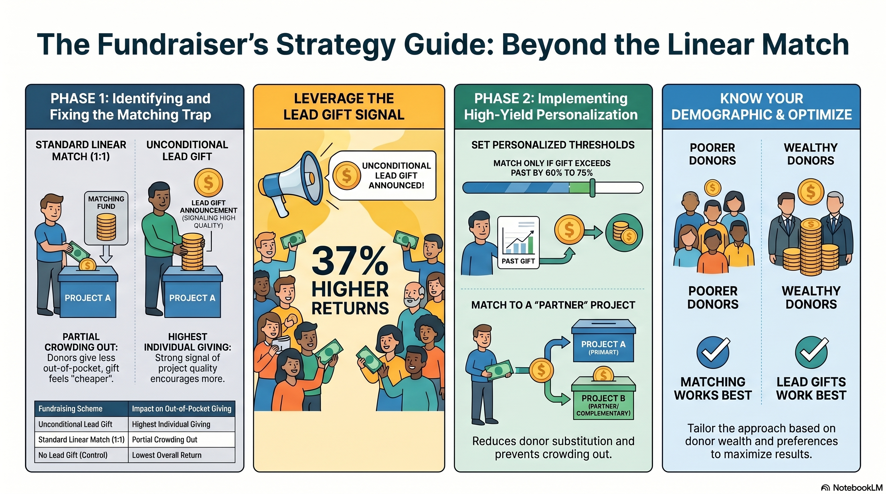

Summary
For decades, fundraisers have assumed that promising to match donations 1:1 is the most powerful incentive available. The evidence here tells a more nuanced story.
In a series of large field experiments with the Bavarian State Opera, simply announcing that a major donor had already given a large lead gift nearly doubled revenue over a standard appeal — without changing how many people gave. Linear matching, by contrast, attracted slightly more donors but caused regular donors to scale back their own gifts, leaving total revenue lower than the lead-gift approach.
Two important caveats followed. First, if you must match, structure it cleverly: match only above a threshold, or set a personalised threshold just above the donor's previous gift. Second, the standard wisdom flips for low-income donors. In a 185,000-person experiment in Kyrgyzstan, matching genuinely raised total giving by 37% — because poor donors are far more sensitive to price.
Practical takeaway: announce big gifts already received, and reserve matching for donors who cannot otherwise afford to give.
Explore
Listen
Podcast · approx. 20 min
Watch
Video · 5 min
Infographic
Visual summary

Papers
Huck, S. & Rasul, I. (2011). Matched fundraising: Evidence from a natural field experiment. Journal of Public Economics, 95(5–6), 351–362.
PDF →Huck, S., Rasul, I. & Shephard, A. (2015). Comparing charitable fundraising schemes: Evidence from a natural field experiment and a structural model. American Economic Journal: Economic Policy, 7(2), 326–369.
PDF →Adena, M. & Huck, S. (2017). Matching donations without crowding out: Some theoretical considerations and a field experiment. Journal of Public Economics, 148, 32–42.
PDF →Adena, M. & Huck, S. (2022). Personalized fundraising: A field experiment on threshold matching of donations. Journal of Economic Behavior & Organization, 200, 1–20.
PDF →Adena, M., Hakimov, R. & Huck, S. (2020). Price-matching guarantees and charitable giving: Evidence from a large-scale natural field experiment. Working paper.
PDF →